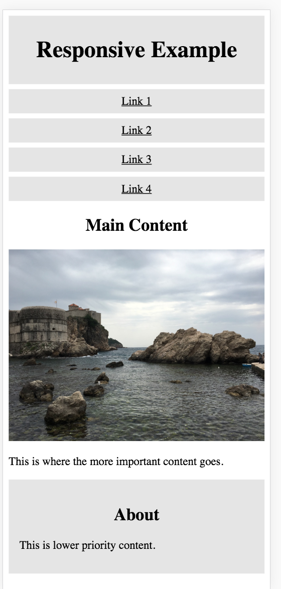
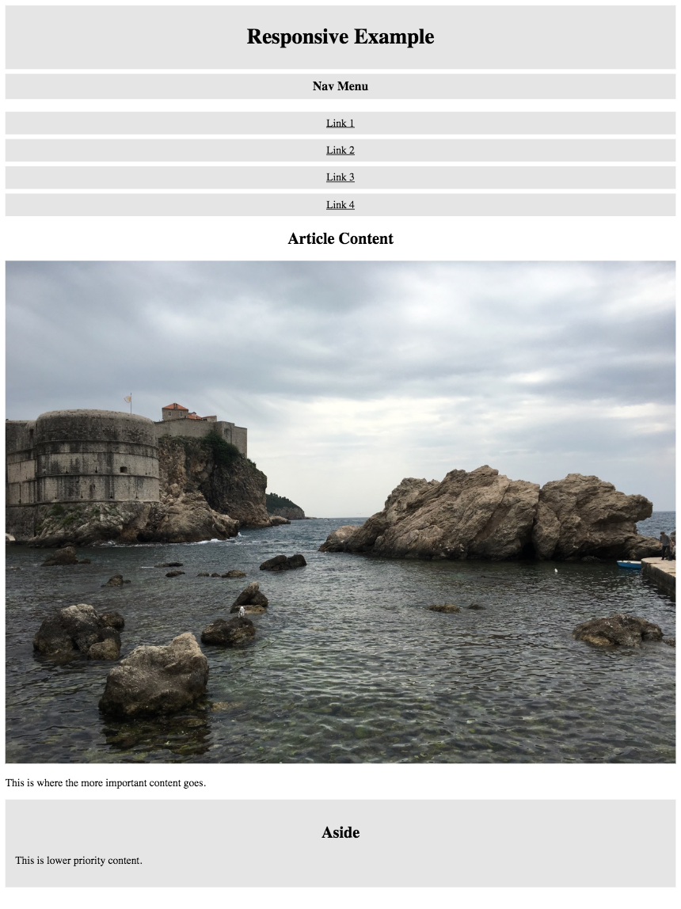
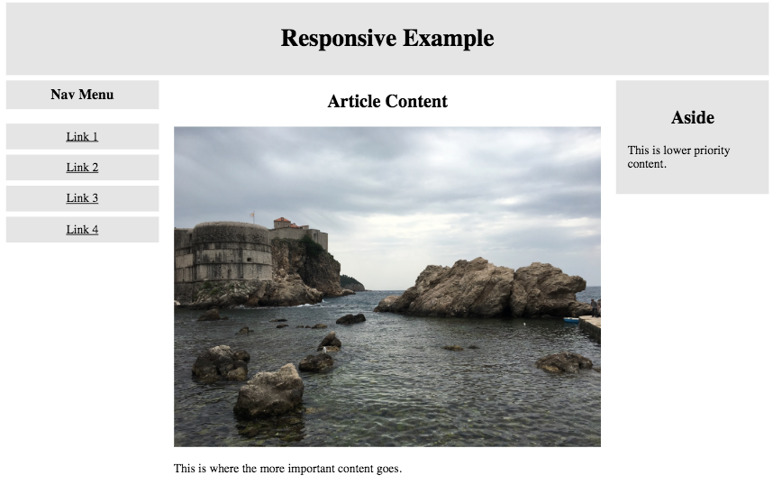

Responsive Design Exercise 1
(Week 5, Tuesday 9/25)
Today you'll work on some basic responsive design using media queries and fluid typography.
Due: By start of class on Thursday, 9/26.
Setting Up the HTML
Create a folder for this exercise in your igme230 repository. Download the following files into that directory (right click on the link and choose "save as"):
{kind=link}
Once you've downloaded the HTML and JPG files, create a new "sample.css" file in the same directory.
Mobile-First Design
Very often, responsive design is done by taking a page that's been optimized for use on a desktop screen, and adding new formatting that's applied if the screen is smaller. This type of responsive design is often referred to as "graceful degradation." Current best practices in web design, however, focus on designing first for the mobile user experience--this is referred to both as "mobile-first design", and as "progressive enhancement."
This is what we want the initial mobile version of our page to look like. (We'll be doing more with formatting it on Thursday.):
To accomplish this, you'll need to put the following style rules into your sample.css file:
- Use box-sizing: border-box; on the html element (good practice on any page)
- Set header, article, and aside to width: 100%
- Give the header a background color of gray (I used #e5e5e5), and 8px of padding on all sides
- Set h1, h2, and nav to use text-align: center
- Set nav to overflow: auto
- Set img to max-width: 100%
- Set h3 and nav a (a elements inside of nav elements) to use the same background color as the header, padding:8px, margin-top:7px, width:100%, and display:block (
h3, nav a { ... }). - Set aside to the same background color as the header, with 15px of padding and a 7px top margin.
Use the developer tools in your browser to view the page in a variety of device formats. (It should look the same in all of them.)
Progressive Enhancement
The mobile design works well on a mobile device, but not quite as well on a tablet or desktop browser:
We're going to add some styles so that in larger viewports, the site looks like this:
We can tell the browser to add additional styles to a document at specific sizes by using a media query. In this case, we want the styles to be applied when the screen size is at least 620px wide.
@media screen and (min-width: 620px) {
}
Styles that you want used on larger screens go in between those curly braces. Here's what you need to add in order to generate the design shown above (it's surprisingly simple):
- Set aside and nav to have float:left and width:20%;
- Set article to have float:left, width:60%, and padding: 0 20px
Once again the developer tools in your browser to view the page in a variety of device formats. You should see the design shift when you go above or below 620px in width.
Submitting Your Work
Edit your landing page to include a link to this exercise. Commit all of your changes (if you haven't already, and sync or push your files to GitHub. Check your GitHub repo (youruserid.github.io/igme230) to make sure the link is there and works properly!